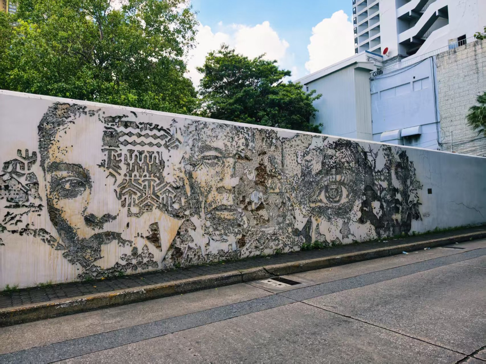
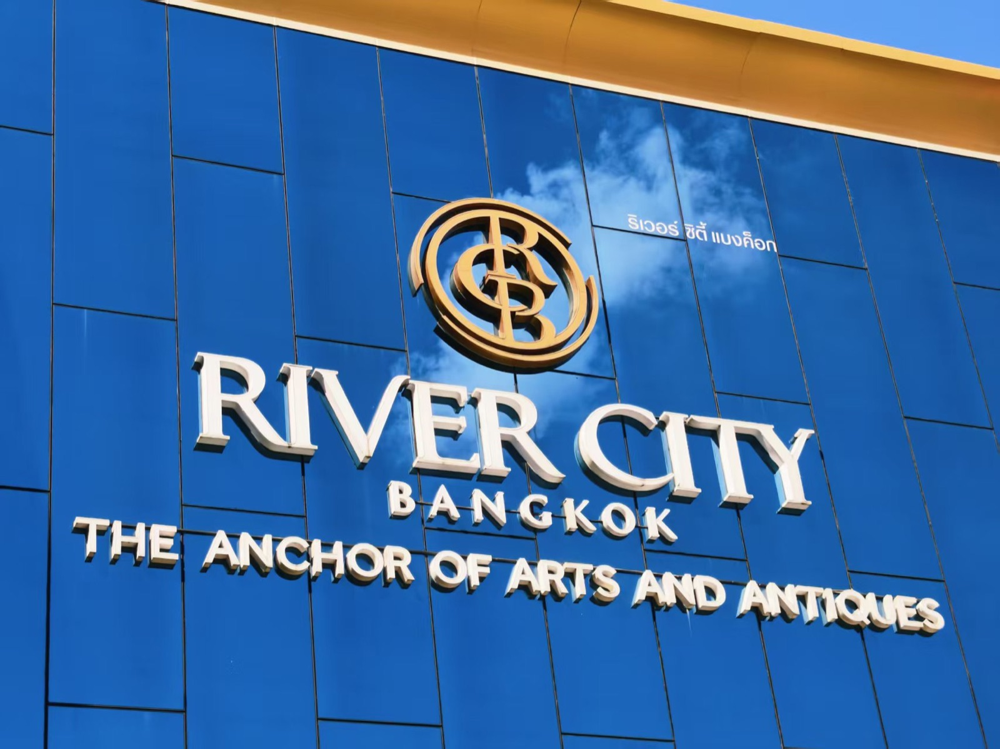
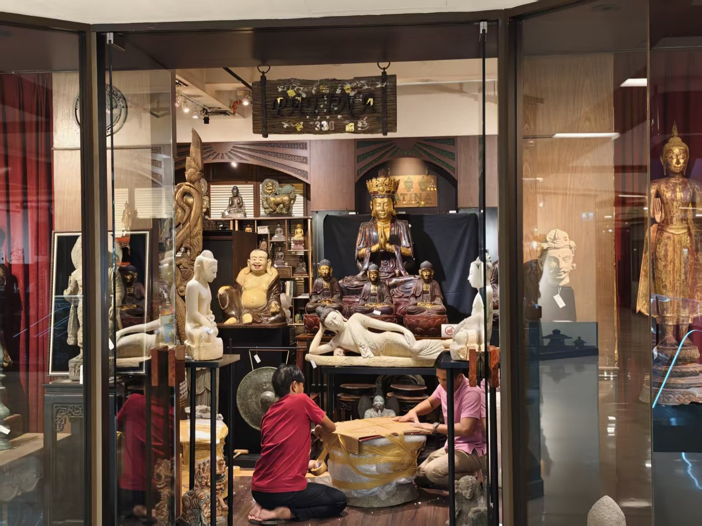

石龙军路
Warehouse 30 是石龙军路边一个旧仓库改的文创园。外墙一整面涂鸦，街区艺术氛围很浓。里面的店铺卖中古的小玩意，不让拍照，只能站在门口看一眼——门口就已经很满了。


沿河走到 River City，玻璃外立面透亮，墙上写着「The Anchor of Arts and Antiques」——艺术与古董之锚。中庭挂着成排的白色吊灯，配棋盘格的地面，楼上的画廊一家挨着一家。


铺子里卖什么的都有：描金的瓷器、整墙的织物圆盘、大大小小的佛像。撞见一家店正在打包，两个人跪在地上给一尊卧佛缠泡沫纸——古董也要寄快递。



楼里有个展览，最喜欢的是这一幅。